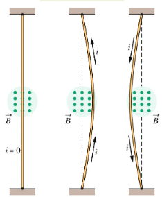
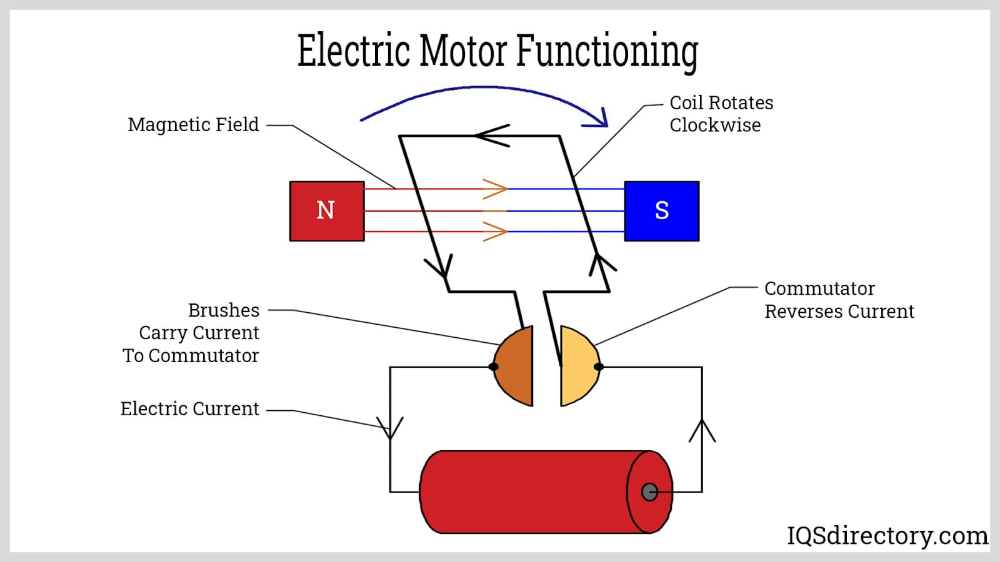
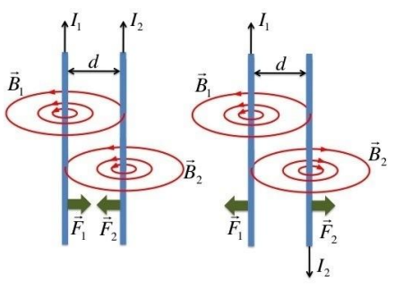

Current-carrying wires experience magnetic forces when placed in magnetic fields. This fundamental interaction is the basis for electric motors, galvanometers, and many other electromagnetic devices. Understanding these forces is crucial for analyzing electromagnetic systems.
The Magnetic Force on a Wire
⚡ Magnetic Force Formula
The magnetic force on a current-carrying wire is given by:
This force is perpendicular to both the current direction and the magnetic field.
$$\vec{F}_B = I\vec{L} \times \vec{B}$$
Variables in the Formula
I: Current in the wire (A)
L: Length of wire in the magnetic field (m)
B: Magnetic field strength (T)
θ: Angle between current direction and magnetic field direction
Key Characteristics
Magnitude: \(F_B = ILB\sin\theta\) where θ is the angle between current and field
Direction: Perpendicular to both current and magnetic field (palm rule)
Right-Hand Rule: Point fingers in field direction, thumb in current direction, palm faces force direction
Dependence: Force depends on current, wire length, and field strength
Vector Nature: Force is a vector quantity with magnitude and direction

Vector diagram showing magnetic force perpendicular to current direction and magnetic field.
Example: Basic Wire Force Calculation
Problem: A 0.5 m wire carries 3 A of current perpendicular to a 0.2 T magnetic field. Calculate the magnetic force on the wire.
Step 1: Identify Given Values
Current: I = 3 A
Length: L = 0.5 m
Magnetic field: B = 0.2 T
Angle: θ = 90° (perpendicular)
Step 2: Apply Force Formula
\(F_B = ILB\sin\theta\)
\(F_B = (3)(0.5)(0.2)\sin(90°)\)
\(F_B = 0.3\) N
Step 3: Determine Direction
Use right-hand rule: point fingers in magnetic field direction
Point thumb in current direction
Palm faces in force direction
Answer
The magnetic force is 0.3 N, directed perpendicular to both the current and magnetic field.
Why Magnetic Forces Arise from Current-Carrying Wires
🔍 Understanding the Source of Magnetic Forces
Magnetic forces on current-carrying wires arise from the collective motion of charged particles.
Each moving electron in the wire experiences a magnetic force, and these individual forces combine to create the net force on the wire.
Microscopic Explanation
Moving Electrons: Each electron in the wire moves with drift velocity
Individual Forces: Each electron experiences Lorentz force: \(\vec{F} = q\vec{v} \times \vec{B}\)
Collective Effect: All electron forces add up to create net force on wire
Wire Structure: Positive ions in wire lattice provide equal and opposite forces
Example: Force on Individual Electrons
Problem: Explain how the magnetic force on a wire relates to forces on individual electrons.
Step 1: Electron Motion
Electrons move with drift velocity through wire
Each electron has charge q = -1.6 × 10⁻¹⁹ C
Electrons move in direction opposite to conventional current
Step 2: Individual Forces
Each electron experiences: \(\vec{F} = q\vec{v}_d \times \vec{B}\)
Force direction depends on electron velocity and field
All electrons experience force in same direction
Step 3: Net Force
Total force = Sum of all individual electron forces
Net force = Number of electrons × Force per electron
This gives the macroscopic force formula: \(\vec{F}_B = I\vec{L} \times \vec{B}\)
Answer
The magnetic force on a wire is the sum of individual Lorentz forces on all moving electrons in the wire, resulting in the macroscopic force formula.
Electric Motor Principles
⚙️ Electric Motor Operation
Electric motors convert electrical energy to mechanical energy using magnetic forces on current-carrying wires.
The basic motor consists of a current-carrying coil in a magnetic field that experiences forces.
Motor Components
Armature: Current-carrying coil that experiences magnetic forces
Magnetic Field: Usually provided by permanent magnets or electromagnets
Commutator: Reverses current direction to maintain rotation
Brushes: Electrical contacts that connect to power source

Simple electric motor showing armature, magnetic field, and commutator.
Example: Motor Force Calculation
Problem: A motor has 100 turns of wire, each with length 0.1 m, carrying 1 A in a 0.3 T field. Calculate the total magnetic force on the coil.
Step 1: Calculate Total Wire Length
Single turn length: L₁ = 0.1 m
Total length: (L_total) = N × L₁ = (100)(0.1) = 10 m
Step 2: Calculate Magnetic Force
\(F_B = ILB\sin\theta\)
\(F_B = (1)(10)(0.3)\sin(90°)\)
\(F_B = 3\) N
Step 3: Motor Operation
Force causes coil to move
Commutator reverses current to maintain motion
Converts electrical energy to mechanical motion
Answer
The motor experiences a total magnetic force of 3 N on the coil, causing rotation and converting electrical to mechanical energy.
Force Between Parallel Wires
Mutual Magnetic Forces
Parallel Currents: Wires attract each other
Antiparallel Currents: Wires repel each other
Force per Unit Length: \(\frac{F}{L} = \frac{\mu_0 I_1 I_2}{2\pi d}\)
Distance Dependence: Force decreases with wire separation
$$\frac{F}{L} = \frac{\mu_0 I_1 I_2}{2\pi d}$$
Derivation of the Force Between Parallel Wires
🔬 Step-by-Step Derivation (come back after learning Ampere's law)
We derive the force between two parallel wires by combining Ampere's law and the magnetic force formula.
This derivation shows how the magnetic field from one wire creates a force on the other wire.
Magnetic Field from Wire 1
Using Ampere's law, the magnetic field at a distance d from a long straight wire carrying current I₁ is:
$$B_1 = \frac{\mu_0 I_1}{2\pi d}$$
Force on Wire 2
Wire 2, carrying current I₂, experiences a magnetic force due to the field B₁ from wire 1:
$$F_2 = I_2 L B_1sin\theta$$
Since the current in wire 2s perpendicular to the magnetic field from wire 1, θ = 90° and sin(90 = 1:
$$F_2 = I_2 L B_1$$
Step 3: Substitute the Magnetic Field
Substituting the expression for B₁ from Step 1:
$$F_2 = I_2 L \left(\frac{\mu_0 I_1}{2\pi d}\right)$$
$$F_2 = \frac{\mu_0 I_1 I_2}{2\pi d}$$
Step 4: Divide per Unit Length
Dividing both sides by L to get the force per unit length:
$$\frac{F_2}{L} = \frac{\mu_0 I_1 I_2}{2\pi d}$$
Step 5: Direction of Force
Parallel Currents (same direction): Wires attract each other
Antiparallel Currents (opposite directions): Wires repel each other
Right-Hand Rule: Use to determine force direction

Two parallel current-carrying wires experiencing mutual magnetic forces.
Example: Force Between Wires
Problem: Two parallel wires carry 5 A and 3 A in the same direction, separated by 0.1 m. Calculate the force per unit length.